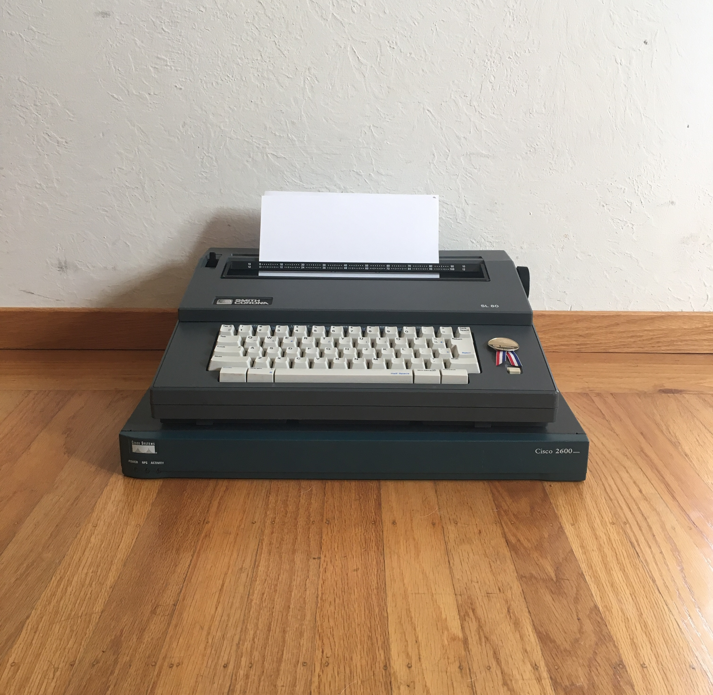
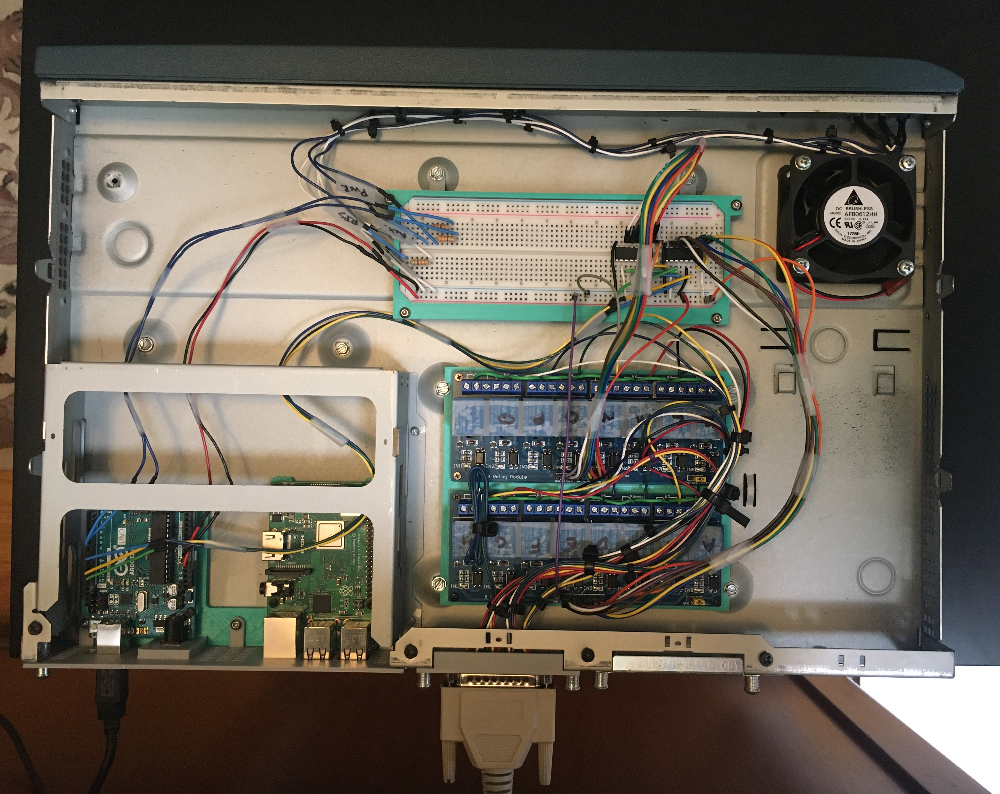

Project 2 - Arduino Teletyper


This is a Smith Corona Typewriter that has been modified to automatically type out: messages, and ASCII art pieces. The components are housed in a Cisco 2600 Series router enclosure.
The goal of this project was to maintain the original 1994 functionality and aesthetic of the typewriter while incorporating features that are relevant to the 21st century
This project satisfied two topics from my thesis research: 1) Rapid Prototyping, and 2) Improving Technical Literacy. [Rapid Prototyping] By preserving the historical context of these pieces of technology through 3D printed parts that mimic the original product’s design language. [Rapid Prototyping] By creating an open-source approach to hacking obsolete technology using common components.[Technical Literacy] By presenting my findings in an interesting and entertaining way as a means to increase technical literacy among peers